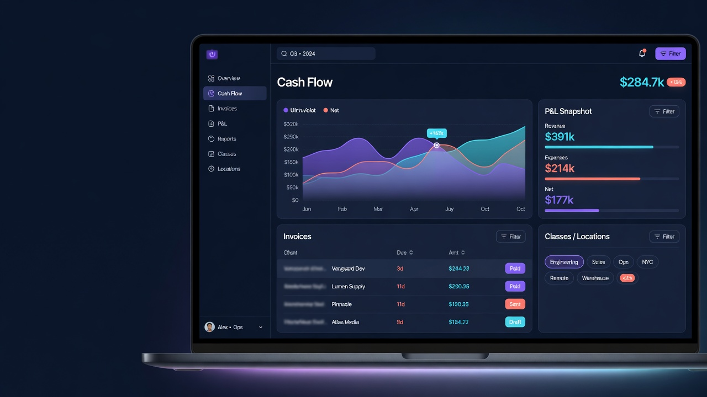
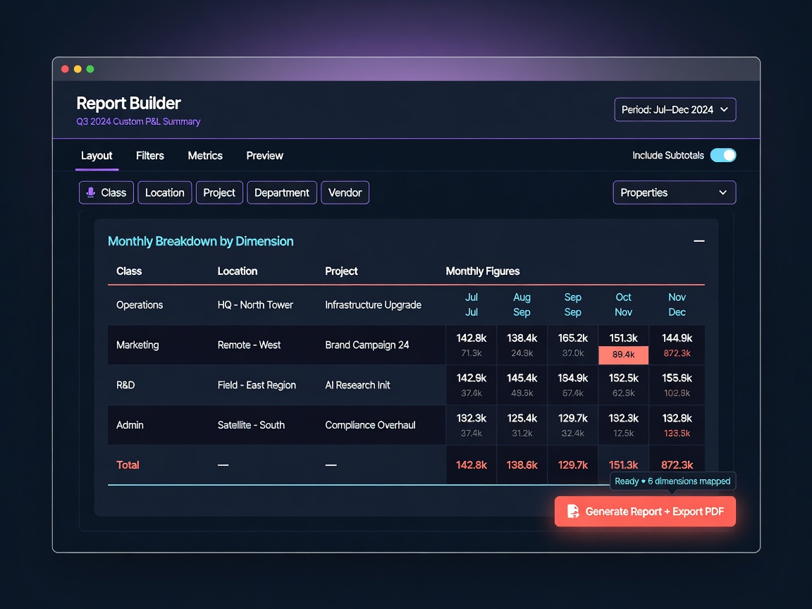
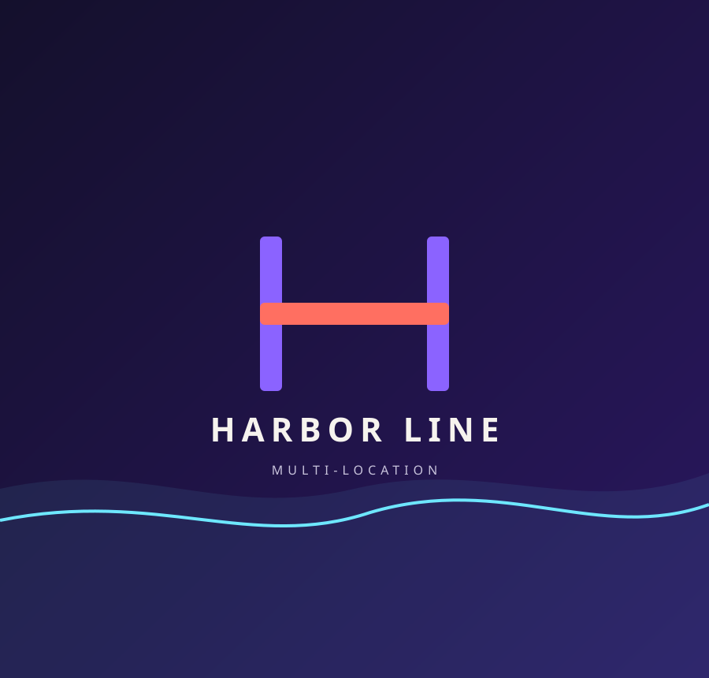
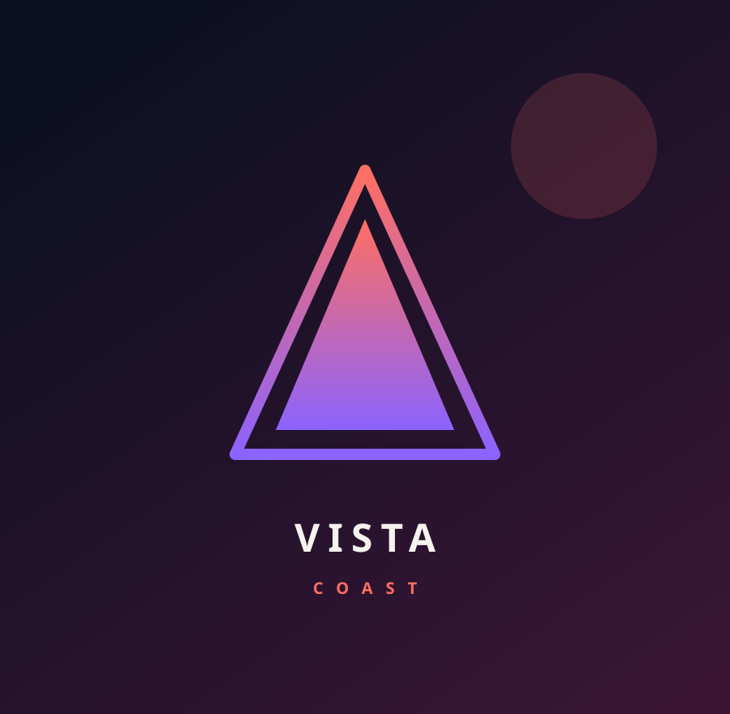
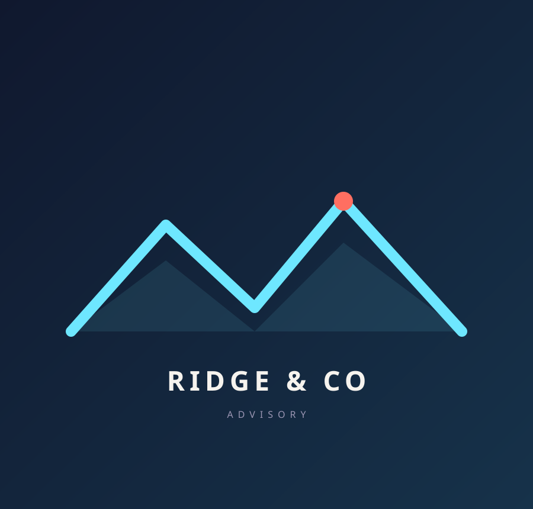
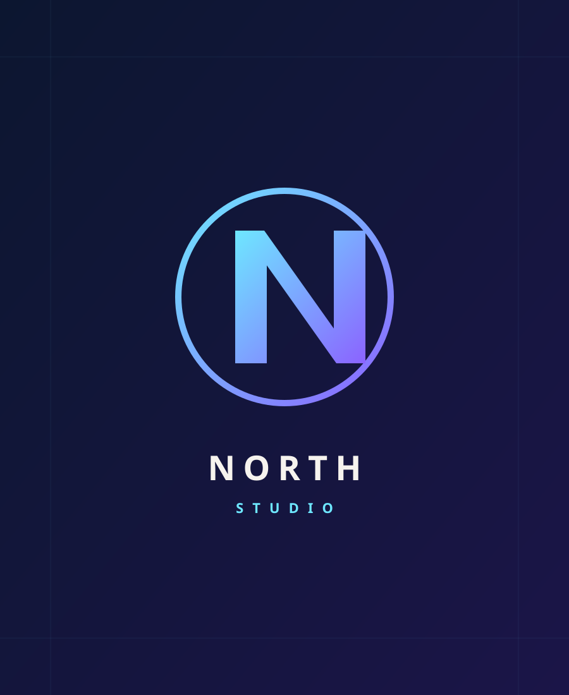

Features stay off
Reports, workflows, permissions, classes, and locations need setup. Most teams never get there.
Team review draft. Testimonial names are layout copy until you paste approved quotes. Packages have no dollar prices. The public CTA is a contact form for a free 30-minute consultation.
You paid for Advanced. You should not still be closing in a Sunday panic.
NeuralSync turns QuickBooks Online Advanced into a file you can run: classes, reports, workflows, and a reviewer on the close. Intuit sells the software. We make it usable.

We turn on reports, classes, workflows, and review inside QuickBooks Online Advanced. These marks are the work, not a partnership claim.
Book a free 30-min consultationIf the plan is paid for and the month is still a scramble, the file is the problem, not your ambition.
Reports, workflows, permissions, classes, and locations need setup. Most teams never get there.
A weak chart of accounts makes dashboards and Intelligence tools guess. Close then fights the structure.
Project profit and budgets only help after books, classes, and review exist.
Setup, intelligence tools with a human check, then the features that change the close.
For startups and growing companies that need more than five users, cleaner reporting, and a file an accountant can actually review.
QuickBooks, QuickBooks Online, and Intuit Intelligence are Intuit products. Feature names above describe what Advanced includes. NeuralSync configures and operates them. We do not resell Intuit pricing, promotions, or support.
You always know who owns the file.
Plan, users, classes, inventory, projects, currencies, and what is already paid for but unused.
Chart of accounts, permissions, workflows, reports, and intelligence tools, with a reviewer on every material change.
A monthly calendar, exception path, and a pack operators can use before the next decision.
Packages keep the wrong fit off the call. Quote is scoped on a free 30-minute consultation. No public dollar figure until the file is seen.
For a new or neglected Advanced file.
Not included: monthly close, tax filing, ERP.
Ask about SetupMost operators start here
For a file that must close every month.
Not included: a dedicated full-time seat, tax filing.
Ask about OperateFor volume that needs a named remote seat.
Not included: replacing every local role or promising guaranteed savings.
Ask about Capacity
The month is already slipping. Book a free 30-minute consultation before the next close.
Book a free 30-min consultationLayout copy · replace before launch
Placeholder operator voices for the testimonial masonry. Names, faces, and quotes are layout only until approved customer proof is pasted in.

Harbor LineThe close finally lives in the file, not in a Sunday spreadsheet.
We stopped rebuilding the same report every month. Classes actually mean something now.
Advanced was paid for. Now the unused features are actually on.
A named reviewer on the close changed the tone of month-end. Exceptions have an owner.

Vista CoastI can see the month before I have to guess it.
Setup first, then the repeating close. We always know who owns the file.

Ridge CoPermissions, workflows, and backup became a habit instead of a panic move.

North StudioThe management pack arrives before the next decision, not after it.
The first conversation is a fit check. We confirm the file, the owner, and the review path before proposing work.
We confirm whether QuickBooks Online Advanced is actually warranted before designing around its features.
The engagement starts with one explicit lane, named exclusions, and a handoff you can review.
Roles, approvals, and material-change review are agreed before access is configured.
We define the close checklist, exception path, and management pack before recurring work begins.
The contact form is the start of qualification, not an Intuit purchase and not an engagement.
No. Intuit sells QuickBooks Online Advanced. NeuralSync implements the file, turns on the useful Advanced features, and runs the close with a named reviewer. We do not quote Intuit’s promotions or list prices as our own.
Startups and mid-size operators in Canada and the United States that are on QuickBooks Online Advanced, moving to it from Plus, or about to buy it and do not want an unconfigured file.
Advanced is usually the right file when you need more than five users, unlimited classes and locations, custom reports, workflows, or tighter permissions. If you only need basic bookkeeping, Plus may still be enough. We will say so.
Yes, after the chart of accounts and coding structure can support them. Categorization, tax flags, and error review are helpers. A NeuralSync reviewer still owns the close. We do not treat chat answers as books.
Umair receives and filters the inquiry, then we email you to schedule a free 30-minute consultation. That call is a scoped discovery of the current QBO file. Larger or complex prospects can later escalate to Taya once that handoff is confirmed.
No blanket filing promise lives on this page. Tax coordination stays inside a confirmed jurisdiction and a named professional-responsibility boundary.